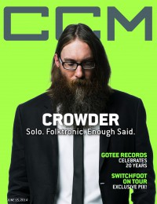

David Crowder
 February 2012 HM |
 15 June 2014 CCM Digital |
 1 October 2016 CCM Digital |
Media coverage
- Sep 2002 in New Man "Guy Gear: The Pied Piper of Christian Rock", by Bob Liparulo
- Sep 2003 in CCM "The Odd Man Out", by Andy Argyrakis
- Jan 2004 in Relevant "First To The Air", by David Crowder
- Mar 2004 in CCM "Something Old, Something New", by David Schrader
- Mar 2004 in Worship Leader "The Fine Art of Collaboration with Chris Tomlin"
- Jul 2004 in CCM "Insider: Ready For The Big Leagues"
- Feb 2005 in CCM "5 Questions With: David Crowder"
- Jan 2006 in CCM "Our Love Is Loud: The Noise We Make", by Janet Chismar
- Jun 2006 in Worship Leader "Table Talk: David Crowder", by Julie Reid
- Jun 2006 in Charisma & Christian Life "A Passion for His Presence: David Crowder", by Jomili Noble
- Aug 2007 in CCM "Things I ♥: David Crowder"
- Fall 2008 in Ignite Your Faith "Entertainment: Music: A Beautiful Moment: A Remedy for A Hurting World", by Catherine Newhouse, Todd Hertz
- Jan 2009 in Worship Leader "Song Story: O Praise Him", by Bonnie Lewis
- Dec 2011 in CCM Digital "Musicians Corner: Story Behind the Song: David Crowder, Matthew West, TobyMac"
- Jan 2012 in Worship Leader "Table Talk: Saying Goodbye", by Jeremy Armstrong
- Feb 2012 in HM "This Is The* End", by Dan MacIntosh, Doug Van Pelt
- May 2012 in Relevant "The Drop: What's Next For David Crowder?", by Dan Gibson
- 15 Jun 2014 in CCM Digital "Believer", by David Crowder
- 15 Jun 2014 in CCM Digital "The Making of Neon Steeple", by Andrew Greer
- Sep 2014 in Relevant "The Drop: Conversation: On Electronic Music and Going Solo"
- 1 Oct 2016 in CCM Digital "The Prodigal Returns", by Caroline Lusk
- Nov 2016 in Relevant "The Rebirth of David Crowder", by Margo Robinson
Albums & reviews:
2016: American Prodigal
- 1 Oct 2016 in CCM Digital, by Matt Conner
- Nov 2016 in Worship Leader, by Graham Gladstone
2022: Milk & Honey
2022: Milk & Cookies: A Merry Crowder Christmas
Award Summary (Nominations / Wins)
Dove Awards- 2008 Dove Awards
- Worship Song: "Everything Glorious"
- Song: "Come As You Are"
- Pop/Contemporary Album: Neon Steeple
- Recorded Music Packaging: Neon Steeple
- Pop/Contemporary Recorded Song: "Come As You Are"
- Rock/Contemporary Recorded Song: "Lift Your Head Weary Sinner (Chains)"
- Long Form Video: Neon Porch Extravaganza
- Recorded Music Packaging: American Prodigal
- Short Form Music Video: "Run Devil Run"
- Rock/Contemporary Recorded Song: "Run Devil Run"
- Rock/Contemporary Album: American Prodigal
- Song: "All My Hope"
- Pop/Contemporary Recorded Song: "All My Hope (ft. Tauren Wells)"
- Song: "Red Letters"
- Pop/Contemporary Album: I Know A Ghost
- Short Form Music Video: "Red Letters"
- Rock/Contemporary Recorded Song: "Wildfire"
- Pop/Contemporary Recorded Song: "Good God Almighty"
- Song: "Good God Almighty"
- Pop/Contemporary Album: Milk & Honey
- Recorded Music Packaging: Milk & Honey
- Rock/Contemporary Recorded Song: "Higher Power"
- Song: "God Really Loves Us"
- Christmas / Special Event Album: Milk & Cookies: A Merry Crowder Christmas
- Rock/Contemporary Recorded Song: "Grave Robber"
- 2014 Grammy Awards
- Best Contemporary Christian Music Performance/Song: "Come As You Are"
- Best Contemporary Christian Music Performance/Song: "Lift Your Head Weary Sinner (Chains)"
- Best Contemporary Christian Music Album: American Prodigal
- Best Contemporary Christian Music Album: I Know A Ghost
- Best Contemporary Christian Music Performance/Song: "God Really Loves Us (Radio Version)"
Published articles
© 2011 CMnexus. Last updated August 2025. Contact: editor -AT- cmnexus -DØT- org